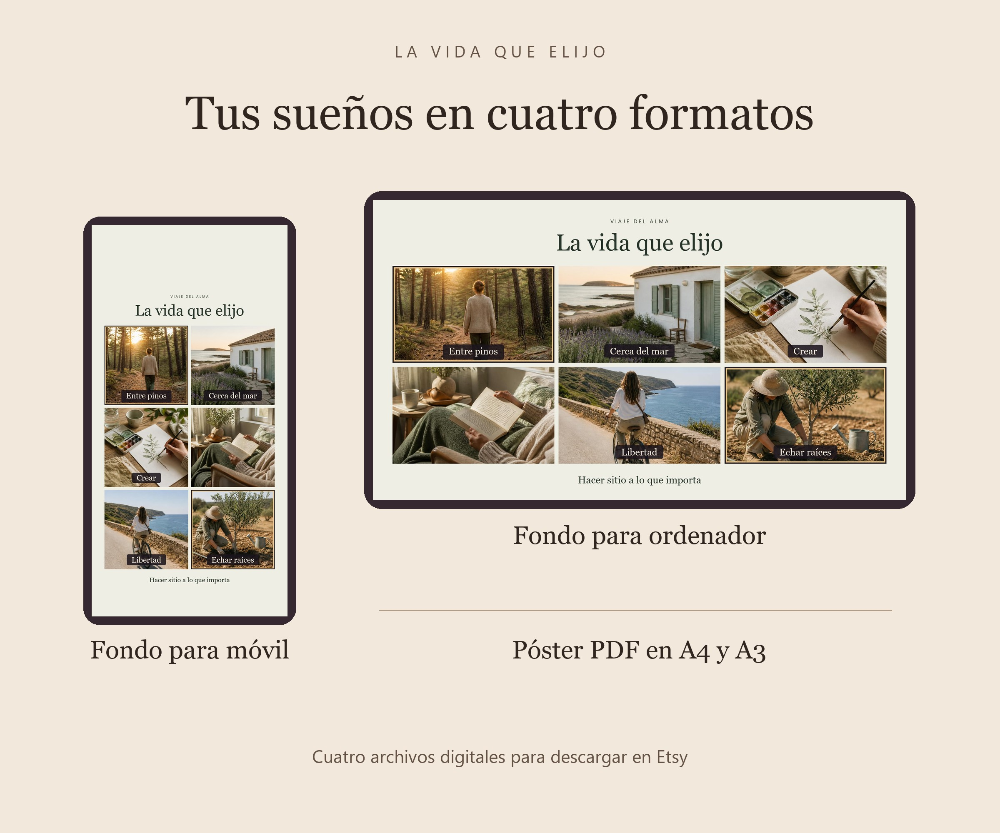

La vida que elijo
Tu tablero de sueños personalizado
Cuéntanos de uno a seis sueños y los convertimos en escenas para tenerlos presentes cada día. Elige el tono, la paleta y las palabras que quieres ver en tu tablero.
Pedir mi tablero en EtsyCuatro archivos digitales hechos por encargo. Verás el precio en Etsy.

Cuatro formas de tenerlo a la vista
- Fondo de móvilJPG · 1440 × 2880 px
- Fondo de ordenadorJPG · 2560 × 1440 px
- Póster A4PDF · 210 × 297 mm
- Póster A3PDF · 297 × 420 mm
Cómo hacemos tu tablero
- En la ficha de Etsy, escribe tus sueños y elige los tonos y colores al hacer el pedido. Puedes marcar los sueños que quieras destacar.
- Creamos las escenas con ayuda de IA y revisamos personalmente la composición y las palabras.
- Recibes la vista previa por Mensajes de Etsy. Tienes un ajuste incluido antes de la entrega.
- Cuando el pedido esté completado, descargas los cuatro archivos desde Etsy.
Preguntas frecuentes
¿Qué tonos y colores puedo elegir?
Elige un tono principal entre realista, divertido, místico e inspirador. Si te apetece, añade un segundo tono. Hay tres paletas: cálida (ocre y oliva), lunar (índigo y lavanda) y natural (crema y salvia).
¿Puedo añadir mis propias palabras?
Sí. Puedes elegir una palabra o frase de hasta 22 caracteres por sueño y una frase de hasta 65 caracteres para el pie. También puedes pedirnos que te propongamos las palabras.
¿Recibiré un póster impreso?
Recibirás archivos digitales. Los dos PDF están preparados para imprimir en papel A4 o A3.